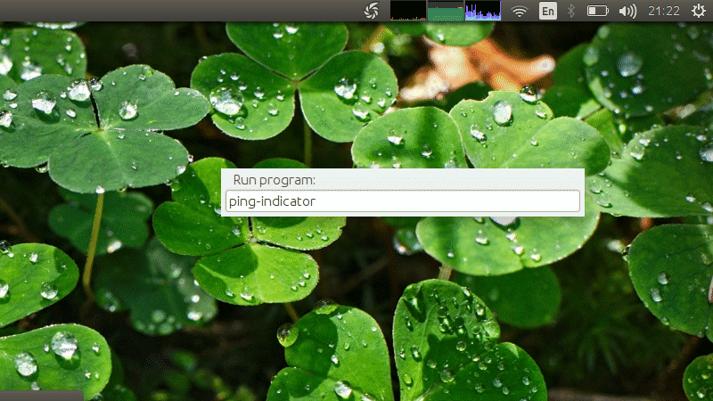

Description
Ping-indicator is meant as a replacement for link monitoring applet for Ubuntu. It still has its rough edges and unimplemented parts, but does the job
- pings given set of host names
- shows packet loss with solid red band
- monitors response time with logarithmic scale
- refreshes host IP (if DNS changed)
Star/Watch the project to encourage further improvements.
Ping-indicator in action
